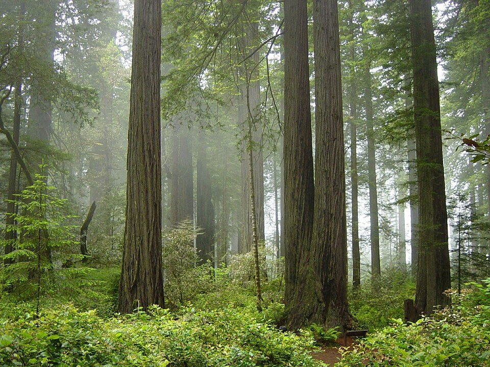

Forests and rainforests
Three trillion trees: the Amazon, the taiga, giant redwoods and Spain's forests, from the dehesa to the laurel forest.


Forests cover about 31% of the land, some 4 billion hectares. A 2015 study estimated that the Earth has about 3 trillion trees, around 400 per person. They are home to most land species, regulate water and climate and store huge amounts of carbon.
The Amazon
The Amazon rainforest covers about 5.5 million km² across nine countries, mostly Brazil. It is the world's largest tropical forest and is home to about 10% of known species. Its trees pump so much water into the atmosphere that they create "flying rivers" of moisture that water much of South America.
A rainforest has floors, like a building: the canopy, 30–40 metres up, gets nearly all the light and holds most of the life; giant trees poke out above it, and on the gloomy floor barely 2% of the light arrives. That is why many plants, such as orchids and bromeliads, live perched on branches.
The main types of forest
- Tropical rainforests: heat and rain all year; maximum biodiversity. Amazon, Congo, South-East Asia.
- Temperate forests: oak, beech, chestnut; they shed their leaves in autumn.
- Mediterranean forests: holm oak, cork oak and pine adapted to summer drought and fire.
- Taiga or boreal forest: the planet's largest forest belt, of pine, fir and birch, stretching across Canada, Scandinavia and Siberia.
Record-breaking trees
- Tallest: Hyperion, a California coast redwood about 116 metres tall. Its exact location is kept secret to protect it.
- Largest by volume: General Sherman, a giant sequoia of about 1,500 m³.
- Among the oldest: Methuselah, a pine in California's White Mountains, about 4,850 years old. Some clonal forests, such as Pando in Utah, could be tens of thousands of years old.


Spain's forests
- The dehesa: an open woodland of holm and cork oaks, shaped by people over centuries for livestock, and one of Europe's most species-rich landscapes. Its cork oaks supply much of the world's cork.
- The Irati Forest in Navarre is one of the largest beech and fir forests in Europe.
- The laurel forest of Garajonay National Park on La Gomera is a humid forest that covered southern Europe millions of years ago and now survives only in Macaronesia. It is a World Heritage Site.
- The ancient dragon tree of Icod de los Vinos, on Tenerife, is one of the Canary Islands' plant symbols.
Hard as it may be to believe, Spain's forest area has grown in recent decades as farmland has been abandoned: forests now cover more than a third of the country. The challenge is to manage them to prevent large wildfires.
Forests in danger
Millions of hectares of tropical forest are lost every year, mostly for pasture, soya and palm oil. Deforestation releases carbon, destroys habitats and disrupts rainfall. Since 2023 the pace has slowed in the Brazilian Amazon, but the 2024 fires were among the worst on record.
Videos to understand it better
- Rainforests 101 | National GeographicNational Geographic
- Explore the Rainforest! | Ecology for KidsSciShow Kids
Videos are from YouTube and belong to their creators. They only load when you click them. See all videos →